2017 News

Eastern Branch Meeting at Boston Stump, 4 Nov 17.
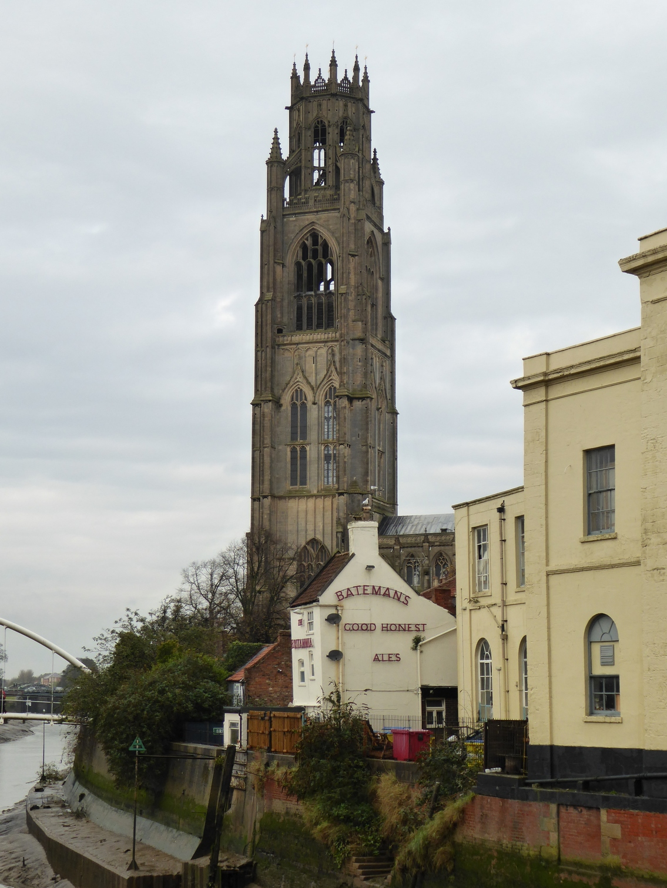
On Saturday 4 Nov it rained in Boston, very heavily. As a result there were quite a few dripping bell ringers assembled at the bottom of the tower in St Botolph’s just before 10 am. Following the one way system (The Stump has two spiral staircases), the ringers ascended, some quickly and some not so.Mick Smith (tower captain) welcomed everyone to the ringing chamber, warned of a trip hazard, and made sure everyone knew to go down the ‘other’ set of stairs. It was still raining, some brave souls went to look off the balcony, including a visitor from Oxford, most didn’t.
Eastern Branch ringing master, Tony Barker, organised the ringing on ten bells from rounds and call changes, through Little Bob, Kent, Grandsire, Plain Bob to Stedman Caters, something for everyone. It was a good turnout despite the weather and the bells were put to good use until 12 noon, when they were left stood at backstroke, ready for service ringing tomorrow.
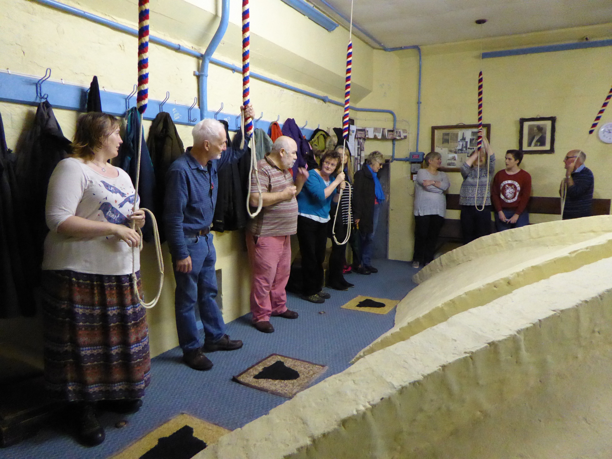
Guild Christmas cards and calendars were on sale and Jo French advertised the Eastern Branch surprise minor practice at Butterwick on Saturday 11 Nov at Butterwick, 3 to 5 pm. Special methods Bourne and Ipswich.Tom Freeston manned the door and everyone was encouraged to take their belongings with them as it is a long way back up to fetch any forgotten items.
By the time a cup of coffee and a chat had been had downstairs in The Stump’s shop, the rain had ceased.
Val Wild
28 Oct 17 - Race-Night Fund-Raising Event – Alford
The Eastern Branch's fund-raising event in support of the Guild was held on the evening of 28 Oct 17 at Alford Church Hall. Once again the event was a Race Night, the “Betty Collett Cup Meeting”, which is fast becoming something of a fixture in our year.
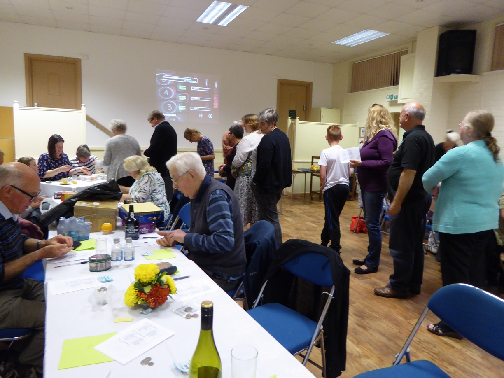
There was a full race card of 9 races, each race having 8 horses. All of the horses in the first eight races had been pre-sold to owners from throughout the Guild branch for the very modest sum of £2-50 each!The Betty Collett Cup - The last race of the night was the “Betty Collett Cup”. This was a between the winning horses from the previous eight races. The winner of this race was ‘Persevered’, owned by Edward Vear, who will be the proud holder of the Betty Collett Memorial Cup for the next 12 months, and who was also awarded a hamper of edible goodies kindly donated by John Collett. A smaller hamper was also awarded to Bobby Blake of Harrington whose horse ‘Bess’ ran a close second, once again courtesy of John Collett!
At the halfway point in the proceedings there was a welcome break for a supper of jacket potato with a choice of fillings followed by a choice
of sweets, produced by Caitlin Meyer ably assisted by Richard Willoughby and their team of helpers.
The raffle provided more fun and prizes, raising £74.00, and our thanks go to all who donated prizes.
Overall, including the raffle, we raised £433.60 for the Guild, for which our thanks go to all who participated in any way in the evening. This year, the proceeds will be donated to the Guild's Education Fund.
Phil Ford -images compliments of Val Wild
Sat 21 Oct 17 - Elloe Deaneries Meeting at Surfleet
A meeting of the Elloe Deaneries Branch took place at Surfleet on Saturday 21st October. So, why were we involved? Quite simply, because the facilities at Surfleet are so good, no steps to climb and there are 12 bells to ring, Elloe made an open invitation to the rest of the Guild to help the ringing along. In the event about 25 people turned up with just over half from the neighbouring Branches of Southern, Central and Eastern who provided eight ringers.
The meeting started at 3 pm and two hours of fairly good ringing followed. It was mostly change ringing and varied from surprise minor, through triples, major, plain & Cambridge Royal and Grandsire Cinques for the service touch.
The service followed, the standard offering from the green book with an interesting little sermon by the incumbent. The inimitable Annette Rhodes had organized tea and this was the usual sumptuous affair. A lively business meeting followed, details of which do not concern us, before ending with the usual vote of thanks and a raffle.
Now 7 pm, we returned to the tower for another hours ringing. Again there was a good range of methods including Surprise Major, all rung well to bring the meeting to a successful conclusion.
Next Elloe meeting will be at, er, - Surfleet! Popular place this – there you go!
Bill Brotherton
Joint Practice with Elloe Deaneries
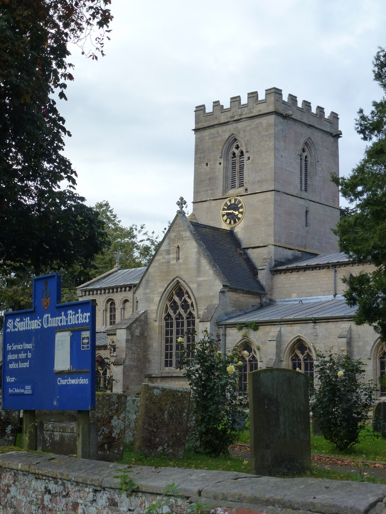
Sat 30 Sep 17 saw ringers gathered together for the joint Elloe Deaneries and Eastern Branch meeting. St Swithun, Bicker’s eight bells were rung from 2.30 pm for about an hour, to a variety of methods on a sunny afternoon. It was an opportunity to try new methods and more familiar ones on a higher number of bells. Thanks go to Barbara Webster (Bicker bell ringer) for meeting us with the key and locking up again at the end.
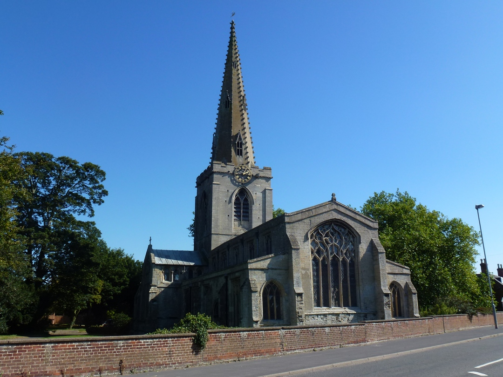
Just down the road, St Mary the Virgin, Sutterton was the next port of call. The eight bells were rung to call changes, surprise major and methods in between, something for everyone. Eastern Branch ringing master, Tony Barker, was in charge, as he had been at Bicker. Penny Fountain (Sutterton ringer) kindly provided refreshments in church afterwards, which the twenty plus ringers all enjoyed, it was a chance for a chat and a catch up.
The next Eastern Branch event is the Quarter peal week, then the Guild BRF fundraiser at Alford ‘The Betty Collett Cup’ Race Night on Sat Oct 28 (please see home page for further details), good fun guaranteed and delicious supper too, all welcome. Following that, is ringing at Boston Stump on Sat 4 Nov 10 to 12 noon, don’t be put off by the number of steps!
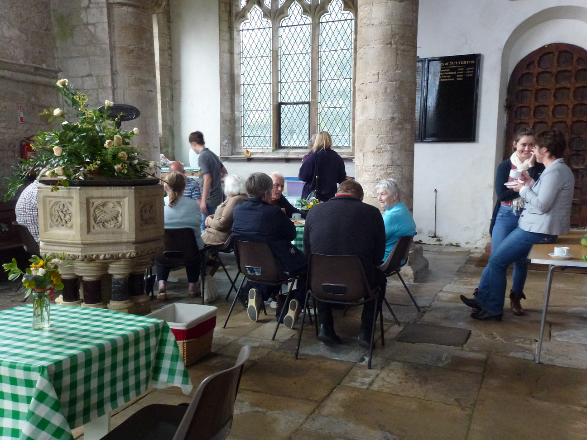
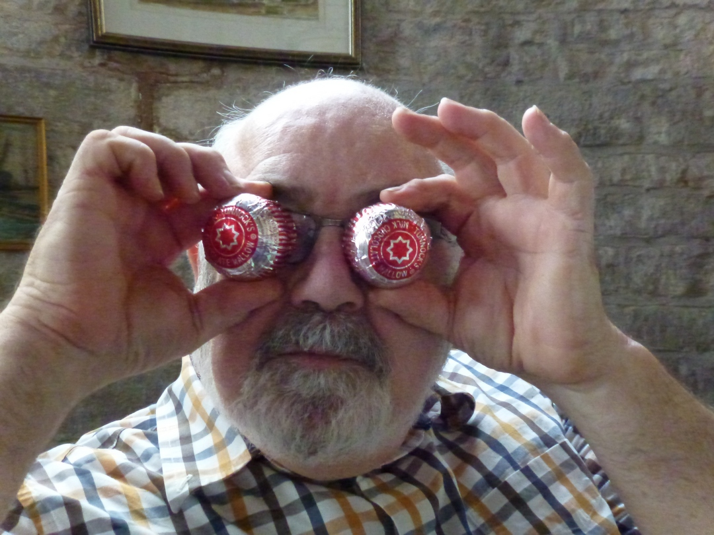
Val Wild and images
Sat 17 Sep 17 – Guild 6 Bell Striking Contests
The Guild’s annual six-bell striking contests for the Edward Colley Plate (call changes) and the John Freeman Cup (method ringing) were held on Saturday 17th September 2017. The Plate was contested for at St. Peter’s Bottesford, a light but very tricky ring of six requiring constant concentration to achieve good ringing and the Cup was contested for at St. Peter’s Scotter, another light six but with very easy-going bells and a delight to ring.
There was a good turn out of members; ten teams having entered, four for the Plate and six for the Cup. With extras and helpers over 70 people turned up, better than April’s AGM, which made for a good meeting. Ringing began at 5pm, with successive teams ringing at 20-minute intervals. Tea was at the Eau Community Centre next to Scotter church and teams from Bottesford arrived just in time to hear the final Cup team perform. Tea was a bumper affair with all sorts of country fare including special cheese in black wax and mixed fruit crumbles, ice cream and all sorts of everything! After tea the Guild Master, Chris Turner welcomed and thanked everyone for coming and for making the event a success and especially to Grimsby tower for providing two teams! The people at Scotter were thanked too for organizing the catering. Chris then introduced Robert Jordan the Plate judge who made some short comments before announcing the results. Those gathered were very surprised at the marking and it was clear that some kind of “black & white” system has been used in which the slightest error was fully penalized: faults ranged from 180 to a mere 50 for the winning team, Ingoldmells who repeated last years success. Deborah Thorley was the Cup judge and must have been using a similar system as Robert as she announced faults varying from 190 to 80 for the winning team, Bourne. Trophies were presented and judges thanked and presented with gifts in appreciation of their efforts.
Afterwards and to finish the evening there was general ringing for all at Scotter where the Bottesford bands were able to sample the bells. Interestingly, during the session a 120 of Plain Bob was rung by a largely Plate band and the estimated faults were fewer than 10!
So, a great success for the Guild with entrants into double figures: might it be possible in the future to aim for two teams per branch or better?
Happy striking - Bill Brotherton
Eastern Branch Picnic Practice
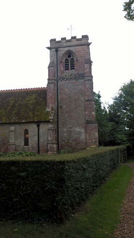
On Sat 2 Sep 17, Eastern Branch held a practice, followed by a Service and meeting at St Peters Gunby. The bells are a light ring of 5, being one of only 2 towers with 5 bells within the Eastern Branch that are currently ringable. Due to the location of the Church, members of the public visiting Gunby Hall, attracted by the bells, came to watch and listen to the ringing. (Always on the look out to promote bell ringing, and happy to talk to anyone, it is amazing how many people ‘used’ to ring but can’t remember what they rang or how many bells or for how long.)
The practice was followed by an intuitive service by Father Terry, (who knew that Sir John Betjeman the Poet Laureate commissioned the artist John Piper to make a line drawing of All Saints Church Horsington which was used to illustrate his poem A Lincolnshire Church). Father Terry was accompanied by his faithful beagle Archie, who had hopefully, but unsuccessfully sniffed out in the various bags left behind the Church door in readiness for the BYO picnic. Thanks go to Les Townsend from Lincoln who played the organ and rang with us and to Father Terry.
There then followed a very short meeting chaired by Mick Smith. It was suggested that a Saturday afternoon in the summer was not an ideal meeting time due to the number of members absent because of wedding ringing commitments. But as the afternoon wore on more members arrived and people picnic’d outside in the sunshine and enjoyed a piece of Val’s birthday cake. A 120 of April Day was rung before the short journey to Candlesby. National Trust volunteers at Gunby Hall mentioned how lovely it was to hear the bells being rung.
Candlesby is other 5 bell tower within the Eastern Branch and the evening concluded with a good ringing practice. Thank you to everyone who attended and to those who organised the event.
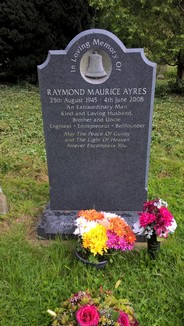
As I wandered around the graveyard at St Peters Gunby I found the grave of a Raymond Ayres who was described as an ‘Engineer, Entrepreneur and Bellfounder’. I asked Helen about him and she told me he was extremely well known in the ringing world, so here is a short piece of history about Raymond M Ayres and one of Eastern Branch’s towers:
In 2000 Ray gave 2 new bells to St Peters Church Gunby in memory of his parents. The new bells were the treble and tenor, with the 3 old bells between them. Ray designed the new bell frame, which was built by Eayre & Smith at Melbourne. Ray himself installed it.
A further bell was cast in memory of Ray, No 2 in the augmented ring at St Mary de Castro in Leicester. Inscriptions on the bell are ‘I ring forever in memory of Ray Ayres’ and ‘Cast in memory of Raymond M Ayres, Bellfounder and Freeman of the City of Leicester’. He had international bell connections with the Lesotto Evangelical Church in Maseru, a school in Johannesburgh, an Anglican Church in Ezinbeleni (near Queenstown) and St George’s Cathedral in Cape Town.
Ray had a family connection to Gunby Hall (his great aunt had been a nursery nurse at the Hall who married a Gunby Hall worker). Ray lived at Gunby Hall as lessee with his wife until a tragic accident in 2008 cut his life short. Donations from his funeral collection were used to purchase a new chalice and paten for St Peters Gunby, and also a new set of hymn books dedicated to Ray.
https://www.ringingworld.co.uk/news-articles/obituaries/134-raymond-ayres.html
Tess Rowland
Eastern Branch at The Cathedral - Sun 6 Aug 17
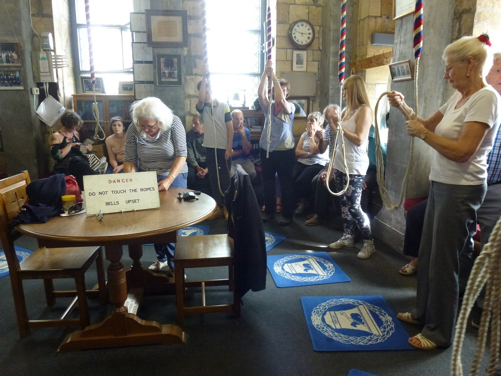
Our Branch was invited to ring for Evensong at Lincoln Cathedral. We met in the Ringers Chapel and whilst waiting for everyone to arrive, lots of visitors to the cathedral came in to the chapel and seemed a bit puzzled to see us all sitting there. It was a long but interesting climb up the tower, a lot of Eastern Branch ringers attended and the ringing chamber was full. We started with called changes on 12 bells then Plain Bob Minor on the front and back sixes at the same time. Every other ring was called changes but Little Bob Maximus and Grandsire Cinques was also rung, finishing with Plain Hunt on 12. The ringing chamber windows were open as it was a warm day so we could hear the clock chimes from the central tower.
After ringing we were allowed onto the tower balcony to look out over Lincoln. People on the ground and castle walls waved to us and the view was really good. When we descended again to the ringers chapel, visitors to the cathedral were still looking in, wondering what was going on. I enjoyed the experience, the nice bells and a stop for a drink on the way home!
James Barker
On Sunday 6th August it was the Eastern Branch’s turn to ring for Evensong at Lincoln Cathedral. After meeting in the Ringers' Chapel at 2.15pm, 21 Eastern Branch members, seven ringers from other Lincoln Guild Branches, including Chris Turner, Guild Master, two non-resident ringers and two non ringers made it up the tower steps to the ringing room.
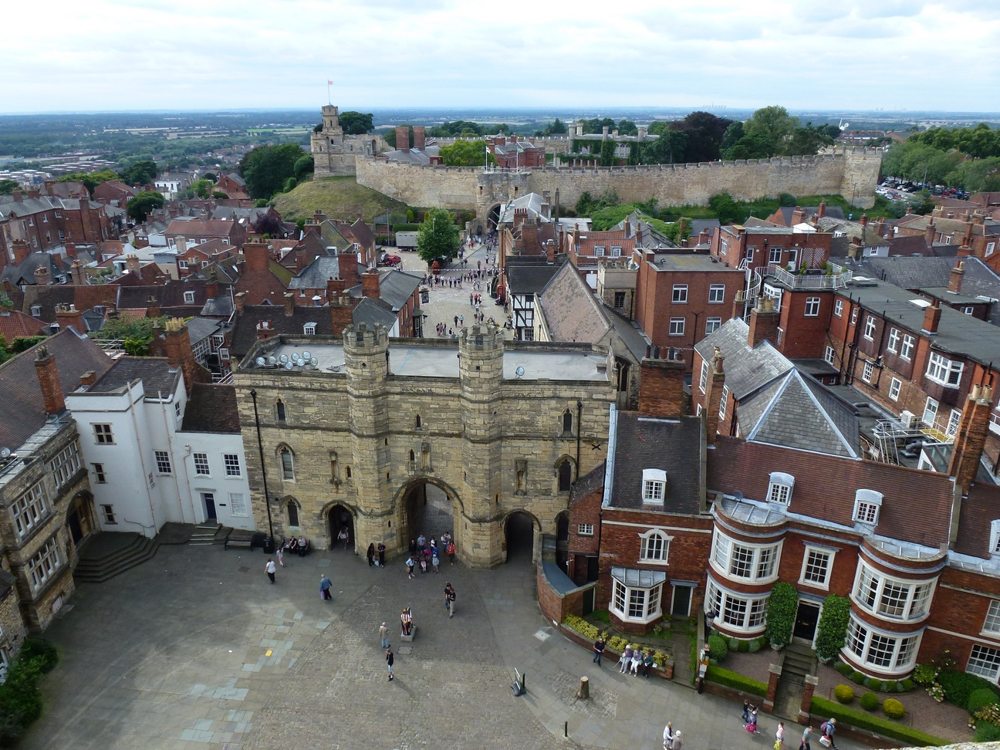
Tony Barker, Eastern Branch Ringing Master, opened the ringing calling for Plain Bob Minor rung simultaneously on both the front 6 and the back 6, a pleasant and interesting variation. We then went on to rounds and call changes. These were called for several times during the afternoon with various callers. The special method was Little Bob Maximus. This was rung well. We also rang a Plain Course of Grandsire Cinques. For service Plain Hunt on 11 was rung. Jeremy Wheeldon, Ringing Master at Lincoln Cathedral, then opened the door onto the balcony and we all trooped out, like Royalty, to the magnificent view of Lincoln Castle, the Water Tower and all the visitors milling around far below us in the Cathedral grounds. The weather was lovely, all the ringing came round and the Steeple keeper at the Cathedral, Phil Mason, said we had “rung well” and we were all very pleased with ourselves.
Our thanks go to the Cathedral ringers, Jeremy Wheeldon, the helpers and all who turned up to ring and helped with the calling.
Helen Brotherton - images compliments of Val Wild
It's like buses - normally I have to cajole members to contribute to the website, then 2 turn up at once! Thank you to all who contribute to this website, it belongs to the EB, please use it. Tess
Practice at West Keal.

Saturday 5th August was the date for the Eastern Branch practice at West Keal. Many ringers were unable to attend because they were ringing for weddings. Those who did, approximately 12 Branch members and 4 non resident visitors, were able to try out these bells following recent work on them. We were pleased to welcome the Master of the Guild Chris Turner and his wife Caroline.
Although the bells sound nice they were heavy going having worn, plain bearings. A board on the wall marked a peal of Doubles, rung in 3 hours 10 minutes! The special methods were Norwich Surprise Minor and Double Court Bob Minor and these were rung well with good striking. Other methods included Cambridge Surprise Minor and Plain Bob. Rounds and Call Changes were also rung to a reasonable standard.

Refreshments were available with water being obtained from the outside tap. There were several contributions of biscuits, fruit, money, tea, coffee and juice and willing helpers to wash up. During a lull in the ringing Val asked for the Branch to pay for the Young Ringers' T shirts. This was voted for unanimously.
The setting of the church, on a hill above West Keal, was perfect. The view across the Lincolnshire countryside, seen from the churchyard was captivating and well worth seeing. Interestingly, the inner walls of the nave slanted outwards as if the roof of the church was too heavy for the walls to support.
All in all it was a very pleasant afternoon. Thanks to the office at West Keal, the Churchwardens, Edward Vear for oiling the bearings beforehand, to Tony Barker for running the ringing and all who helped to make it all work.
Helen Brotherton – images compliments of Val Wild
Sat 8 Jul 17 – Ringing and annual EB BBQ at Butterwick.
The sun really smiled on the EB annual BBQ which was held on 8 Jul 17 at Butterwick. The amazing sum of £360 was raised for the BRF. Thanks go out to everyone who helped to make the event successful.
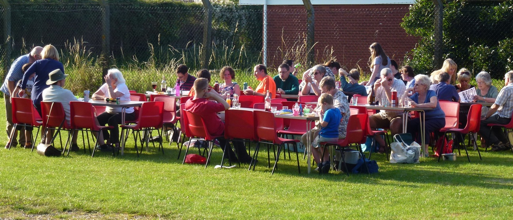
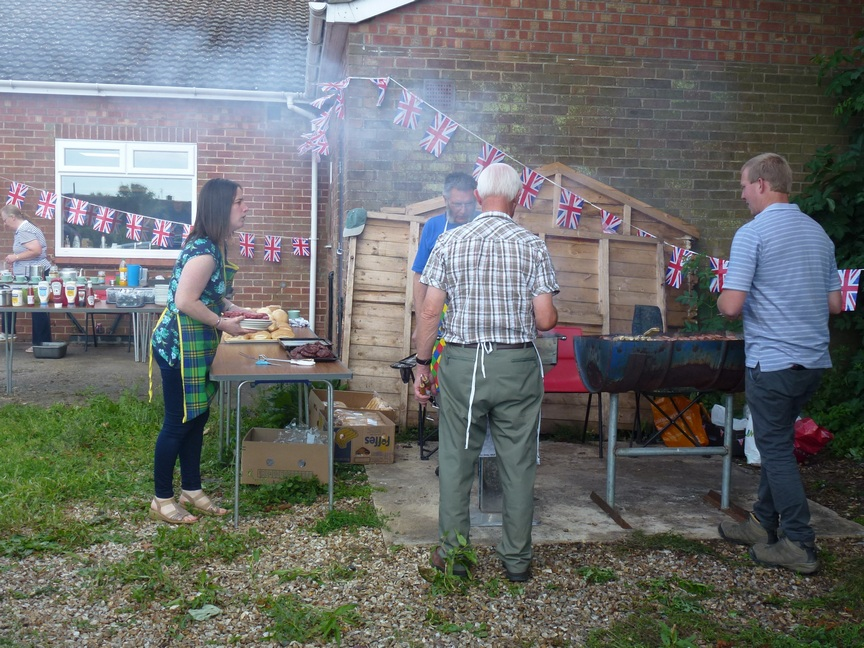
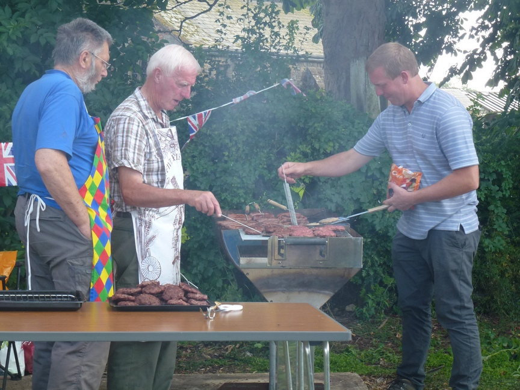
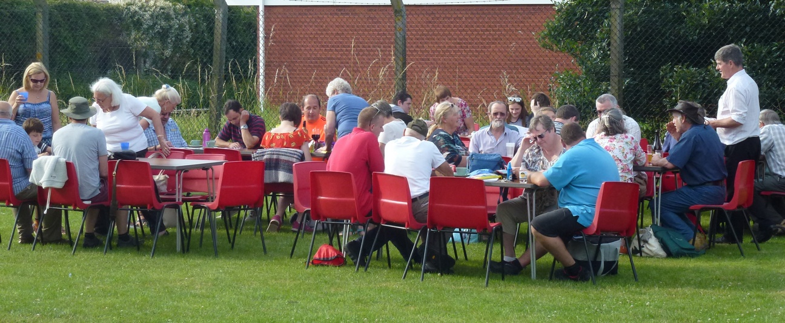
Images compliments of Val Wild
RING WORLD NATIONAL YOUTH RINGING COMPETITION 2017
In July 2017 youth members of the EB formed the Lincolnshire Gamekeepersto represent Lincolnshire along with the Fen Tigers. Below are some of the comments from participants:
The Lincolnshire Gamekeepers participated in the Ring World National Youth Competition in Birmingham this year. The day began when we arrived at the Tower where we would be performing our test piece, Harborne. The team arrived and when it was time we rang call changes. We made a good effort and I was proud of the whole team.
Then we participated in general ringing at various different towers including Kings Norton, St Martins in the Bull Ring (a sixteen!) and St Chads. Then we travelled back to St Martins for the results. We collected our medals and achieved a C grade.
Overall it was an enjoyable day out and we can’t wait to practice for next year. Clare
The Ringing World National Youth competition was a great day out and opportunity to test our skills as ringers. The day was also good as we got to meet many other young ringers. Luke
On 1 Jul 17 our team of young ringers called the Lincolnshire Gamekeepers went to Birmingham for a competition. We had a lot of preparation, going to practices most Saturdays’ leading up to the day. It took 3 hours to get to the qualifier tower and it was fun. The ringing took 10 minutes in total and we rang call changes. We did not make it through the qualifier but it was a great experience overall. Bryony
On 1 Jul 17 I was part of the team Lincolnshire Gamekeepers that competed in The Ringing World National Youth Competition held in Birmingham along with others around the local area.
We had a very interesting day but before that we practiced for 6 Saturdays’ at Sutterton, Spalding and Castor with similar bells to those we would be ringing. Lincolnshire entered 2 teams Lincolnshire Poachers and Lincolnshire Gamekeepers.
Nineteen teams split into 3 qualifier churches (Yardley, Harborne and Shirley). We rang at Harborne. We had 15 minutes to complete our practice and set piece (we rang call changes). We then went to Kings Norton which has 10 bells having the opportunity to ring with other teams. We then went to Aston Parish Church which is a 12 bell church, unfortunately it was very busy so we decided to go to the church in Birmingham. On the way to Aston Parish Church we were given the results of our qualifier confirming sadly we hadn’t got through to the finals. When we got to Birmingham we went to St Martins which has 16 bells one of three in the world and got the chance to ring. It was very hard to hear your bell, all you could really hear was the front bells, a muffly sound, then a few of the back bells dong. I rang the 9th and I thought I chose the right bell to ring. It was amazing. We then moved on to St Chads and rung there, they have 8 bells, they were nice to ring. We then went back to St Martins to hear the results of the whole Competition. We were given Grade C- which meant we came 4th out of 7 teams in our qualifier tower. The winning team were Yorkshire Tykes.
Next year it will be held in London and I hope I get the chance to go again (it will be my final year as you have to be 19 and under by the 31 Aug).George
Liana really enjoyed her day, but found the scoring system confusing. She can’t wait to get practising for London in 2018 and would like the young ringers to get together for a practice on a regular basis – EB BBQ.
Unfortunately I do not have contact details for the other team members, but am sure that the whole of the EB membership would like to congratulate the young ringers for all their efforts. Thanks should also go to Tony Barker and all the other ringers who have assisted the young ringers in this challenge and best wishes for 2018 in London.

Image compliments of Isabel Barker
Sat 3 Jun 17 – Eastern Branch 6 Bell Striking Competition.
I recently went to Wrangle to take part in a striking competition. I really enjoyed it and everyone was so friendly. It was an excellent exerience for me and all the other young ringers, especially competing with the other adult teams. I didn't like the bells though as I found the ropes were too long and I had to have a knot tied in my sally. But on the whole it was good fun and the cakes afterwards were amazing!
Lianna Laverton - EB Youth Ringer
The Eastern Branch 6 Bell Striking Competition was held at St Mary & St Nicolas Wrangle. The result of the above Competition, ably judged by Sylvia Taylor, is as follows:
1st Place - BOSTON: Practice piece ran for 2 min 58 sec. Competition ringing was Grandsire Doubles – 8 min 5 sec. 11 ½ faults.
2nd Place - ALFORD: Practice piece ran for 2 min 56 sec. Competition ringing was call changes – 8 min 22 sec. 20 faults.
3rd Place - CONINGSBY: Practice piece ran for 2 min 40 sec Competition ringing was call changes – 8 min 48 sec. 24 ½ faults.
4th Place - INGOLDMELLS: Practice piece ran for 2 min 59 sec. Competition ringing was Plain Bob Minor – 8 min 53 sec. 27 faults.
5th Place - EB YOUTH TEAM: Practice piece ran for 2 min 18 sec. Competition ringing was call changes – 8 min 59 sec. 34 ½ faults.
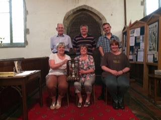
Sat 6 May 17 - EB Meeting & Practice at St Margaret’s Sibsey
On Saturday 6 May 17 approximately 20 members of the Eastern Branch met at St Margaret’s Sibsey for a Branch Meeting and ringing practice evening.
At the meeting Gladys from Coningsby & Tattershall was proposed and seconded as a new member. The Branch outing was discussed as the proposed outing to the Loughborough Foundry was now cancelled. Gemma was looking into arranging a Tower Tour around the Loughborough area and would welcome ideas for a suitable date. Members were reminded about the EB BBQ on 7 Jul 17 (details and poster on homepage). Tony reported that Fishtoft is now ringable and thanked Bob and Russell for their hard work at Old Bolingbroke. Thanks were also expressed to Ian for tidying the stairs and Tower before the meeting.
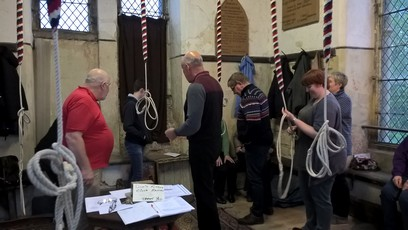
Tony then commenced the ringing, which ranged from rounds and call changes to courses of Grandsire Triples and Double Norwich, covering all abilities at the practice.
It was generally agreed that the timing of 6.30-8.30 pm was convenient and all members gained something from the evening, even it if wasn’t how to smile at a camera!
Tess Rowland
Sat 1 Apr 17 - Learners Practice at St Marys Wainfleet
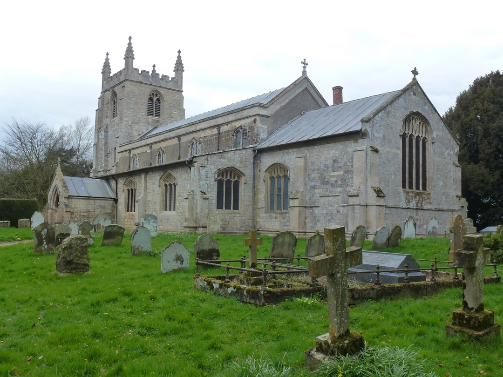
St Mary's at Wainfleet is an ornate, richly decorated high church with several figures of the Virgin Mary, including a black Virgin Mary, reminiscent of the much revered Black Madonna at Candelaria in Tenerife and a statue of St. George slaying the dragon. It has a ground floor ring with good going bells, pleasant sounding and easy handling. Seventeen people attended the practice, mostly experienced ringers with just a few learners. Ringing as up to and including touches of Plain Bob Minor although this was extended, on request, to include a touch of St. Clement's Bob Minor. There were four ringers from the Central Branch and one from the Southern Branch. It was also, the first Branch practice for the new Ringing Master, Tony Barker. Although the weather was fine there was still a chill in the air and John Seymour, churchwarden, provided some very welcome cups of tea and coffee with biscuits.
The learners took full advantage of the practice and were eager to ring. This may have been due to the football rattle used to call ringers to the next piece of ringing! All the learners handled the bells really well. There were willing helpers to stand behind and stand in to ring. The standard of ringing was good, the bells rang well with newish ropes and progress was made. For those standing out there was chat to be had, news to be told and heard and a quiet time to soak up the atmosphere of this pleasant church.
At the end of the practice six of the experienced ringers rang a touch of Stedman Doubles.
The practice went really well and bodes well for the future of the Branch.
Helen Brotherton image compliments of Val Wild
1 Apr 17 - The Alternative EB Practice
The Eastern Branch practice at Wainfleet, St Mary’s was held on Saturday afternoon 1st April, unfortunately the ladies failed to turn up, the men are shown on the attached photo.
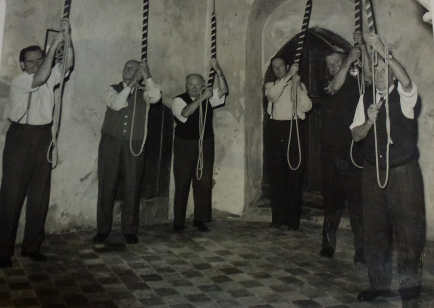
Mr F Noos, Wainfleet
Wed 29 Mar 17 - An Enjoyable Stedman Practice
Five Eastern Branch members ventured down into the Elloe Deaneries on a slightly wet Wednesday evening to Spalding to join in their Stedman practice. The practice was well attended with around twenty ringers coming from the areas surrounding Lincoln, Boston, Alford and Ingoldmells; along with the local ringers.
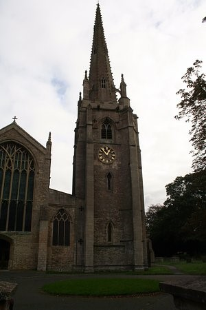
I arrived as they started with a plain course of Stedman Triples and as this is the first time I have rung at Spalding I got a quick look around the tower. The tower has lots of interesting peal boards, including one for John Pratt, who used to ring with me at Alford. We were made very welcome by the gentleman running the ringing, and it was nice to see people I’ve not seen for a while. As the title of the practice states it was a Stedman based evening, so the ringing varied from Stedman doubles, to Stedman triples, to touches of both. I feel that I gained a lot of valuable experience from this practice as it has improved my confidence as Stedman is a method we don’t get to ring much. We then took a break for refreshments. WOW… the refreshments were great, a lovely choice of cakes, savory snacks and grapes along with a wide range of drinks. I had the lemon drizzle it was scrumptious.
We then continued to ring until 9 pm, I rang a touch of Stedman triples which is the longest touch I had rung of it since the last guild AGM, and I wish I could ring more of it as Stedman is such a lovely sounding method. To finish the bells were rung down and they really sang. The church of St Nicholas and St Mary at Spalding is a beautiful spired church in the market town of Spalding, the church has a beautifully painted chancel and the bells are really nice to ring and is well worth a visit. The next special practice is the 5th Wednesday in May.
Gemma Evans
Sat 4 Mar 17 - Eastern & Northern Branches Joint Practice
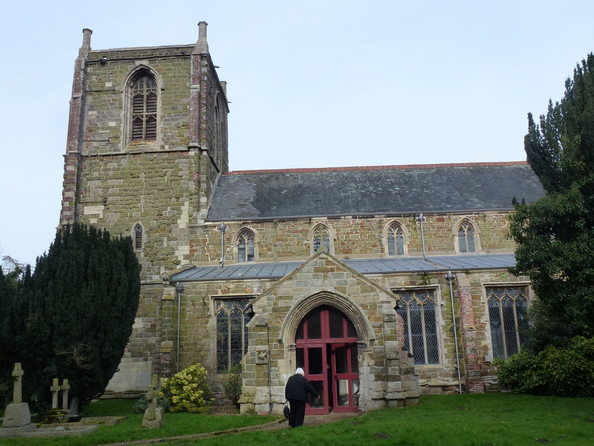
St Helena Willoughby was the venue for the joint Eastern and Northern Branch Practice on Sat 4 Mar 17. The bells here were originally a complete ring of 6 by Henry Harrison II of Barrow on Humber, hung in a timber frame in 1770, the same year that Harrison also cast a ring of 6 for nearby Addlethorpe. Taylor's of Loughborough recast 2 of the bells and rehung all in a new metal frame in 1933. They are a very pleasant sounding ring and go well. In readiness for our visit, the ringing chamber had been given a good 'spring clean' by Gemma Evans.
Approximately 35 ringers from both Branches and further visitors from Central Branch put the bells to good use for 2 hours, during which a variety of methods were rung, including the named special method; touches of Double Court Bob Minor. Caitlin Meyer was Ringing Master.
The Alford ringers, together with Helen Brotherton, provided welcome refreshments that included some very nice cakes.
Inter-Branch events seem to be a good idea and it is hoped that Eastern Branch can next join with the Northern Branch at one of their towers.
Tony Barker - image Val Wild
Thu 2 Mar 17 - Jim Sutherland's Final Farewell.
The very well attended funeral of Jim Sutherland was held on Thu 2 Mar 17 at All Saints Church Wragby, followed by a peal arranged by Jim himself.
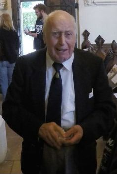
"No more will I climb the Stairs, and get a rope to ring a bell" - Jim Sutherland 2016
Thur 2 Mar 17
Wragby – All Saints
5040 Minor (7m) (being one extent each: 1. Double Court B; 2. London S; 3. Kent TB; 4. Oxford TB; 5. Double Oxford B; 6. Cambridge S; 7. Plain B.) in 2 hrs 39 mins (8-0-4)
- John M Lacy
- Jane K A Hough
- Richard Hough
- Peter S Lacy
- Christopher C P Woodcock (C)
- Barry Jones
Rung in affectionate memory of James A Sutherland ‘Jim’, Tower Captain at this Church for 30 years and Honorary Life Member of the Guild, on the afternoon of his funeral.
The ringers of 1, 4, 5 & 6 were all taught to ring here at Wragby by Jim. The father of 2 was Tower Captain here at Wragby immediately prior to Jim.
The band wish to associate Colin Ward & Tony Barker with this peal. Jim left instructions for the seven methods that he wished us to ring in the peal today (No Doubles!) along with the band he would have liked to have rung the peal, being the four ringers he taught (1,4,5,6) and Colin & Tony who both have strong connections to ringing at Wragby and to Jim. Unfortunately both Colin & Tony were unable to ring in the peal today.
Sat 28 Jan 17 - Eastern Branch AGM at Alford
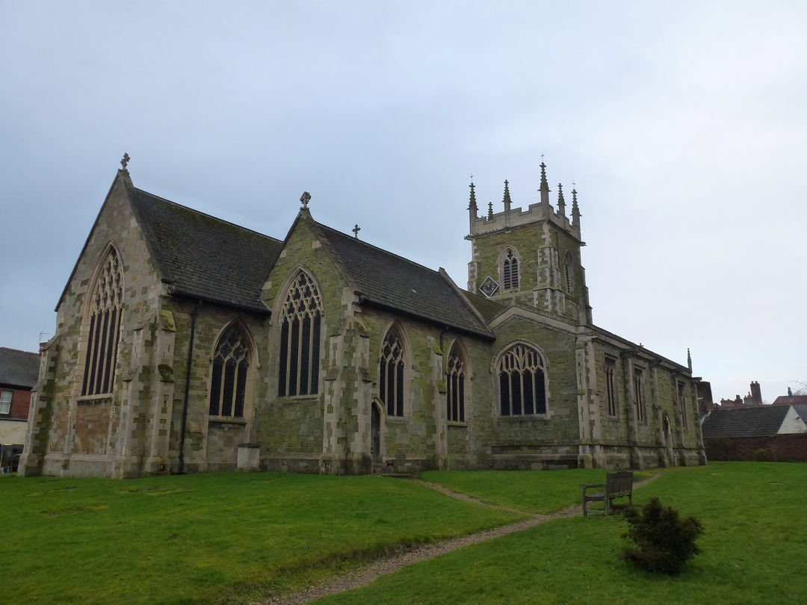
It was a chilly Saturday morning at Alford St Wilfrid’s, which marked the end of the year for the Eastern Branch ringers of the LDGCBR. Ringing started at 11am, and was well attended. Ringing was run by Mick Smith and varied in complexity from rounds and call changes to Cambridge Surprise Minor, we had visitors to the AGM from other branches, including the Central and Northern. Unfortunately, I was helping with lunch in the kitchen so left them ringing. But I did get to see the 8 Bell striking competition trophy.
The service was conducted by Rev Ros (Priest in Charge), and it was a lovely service and made us feel appreciated by the church. Once the service was over we all went over to the Church hall where the Alford Ringers/helpers had been busy setting the tables. As I was helping in the kitchen and acting as one of the waitresses bringing out the lunch. The lunch was several different types of homemade soup, from Leek and Potato, Tomato and Carrot and Ginger all served with a variety of crusty breads. There were several options for pudding, homemade cakes and fruit crumble. This seemed popular, and was welcoming because the tower had been a little chilly. Served with tea and coffee.
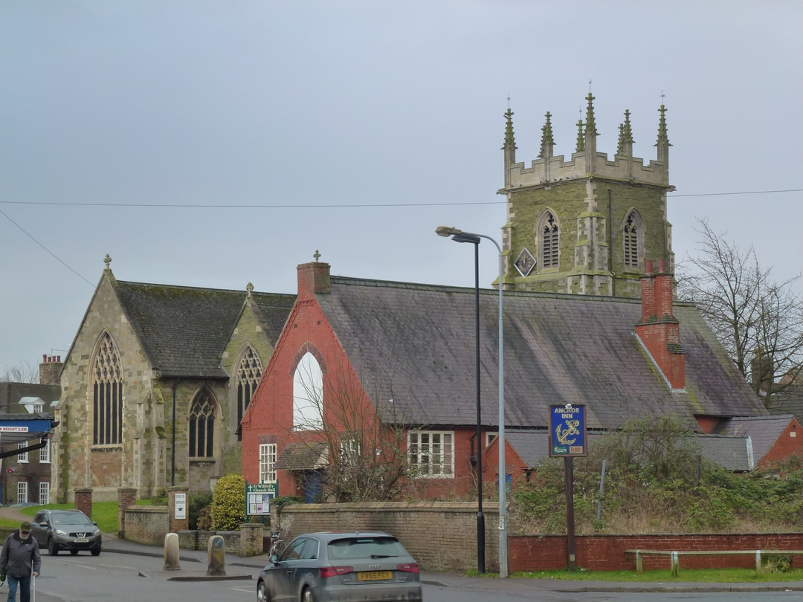
The meeting followed this and was an interesting one, thanks were given to Mick Smith and Jo French who were stepping down as the Ringing Master and Deputy Ringing Master positions, and to Rhoda Reynolds who was stepping down from auditing the accounts. The Election of new officers to these positions then happened, Tony Barker was elected as Ringing Master and Kate Meyer was elected as the Deputy Ringing Master. Tom Freeston became the new auditor of the accounts. We heard from Guild Master Alan Payne about the guild updates, especially about the safeguarding updates. The program of events was discussed and it was agreed to create two outings as some ringers would struggle to do a midweek outing to fit in with Taylors Bell Foundry. There was one new member elected, Lianna Leverton from Butterwick. We wished Tony Barker a speedy recovery after hurting his knee.
The meeting was closed and ringers then ventured back up the tower to ring for a bit longer, this time Kate Meyer ran the ringing, which varied again from rounds and call changes, Stedman, Spliced Plain and Little Bob Minor and Grandsire.
It was a long day as we started at 11am and finished at around 5pm, but was enjoyable.
Here is to another successful year for the Eastern Branch.
Gemma Evans - images compliments of Val Wild
On behalf of all attendees I would like to extend thanks and appreciation for the meal provided by the hard workers in the kitchen. Thank you.
Mon 2 Jan 17 – Coningsby & Friends EB Quarter Peal Tour
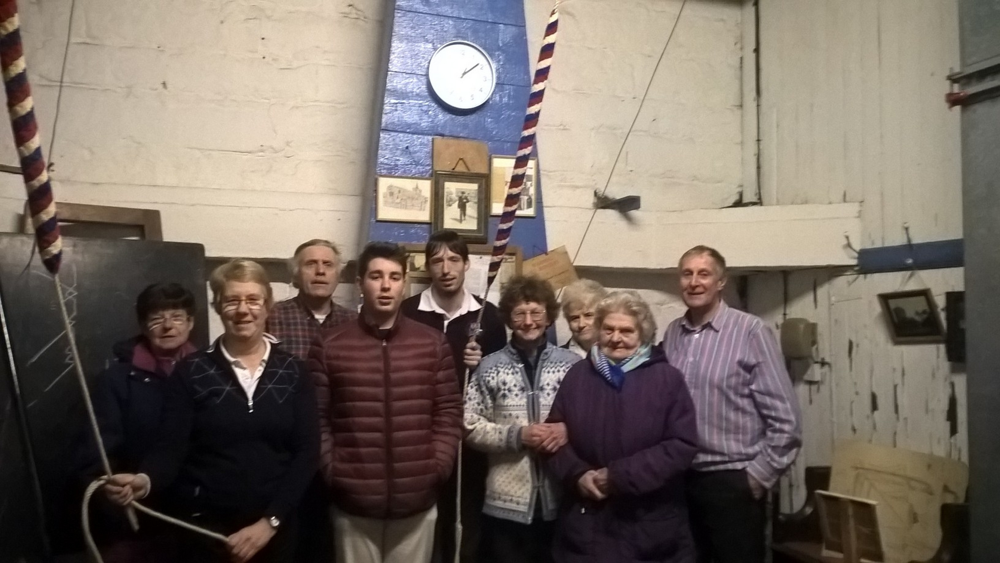
A tour around some EB towers over the Christmas period was casually mentioned the week prior to Christmas and a few ringers at that particular training session felt that it was a good idea. The next thing, it became a reality, with towers being booked, names of ringers who would attend and lunches ordered all within a very short space of time.
I should have known that it was going to be a very cold day when the whole of Lincolnshire was mentioned in the BBC2 travel news due to ‘treacherous icy conditions’, with Stickney getting named and my garden looking like a Victorian Christmas card scene, very pretty but hiding all the leaves etc I have yet to pick up! After eventually de-icing the car I arrived at St Michael’s Coningsby at 1000 hrs, and after parking in a sunny spot (not wishing to repeat the de-icing procedure), I met with the other ringers and the tour began.
After Coningsby, we drove carefully to Old Bolingbroke SS Peter & Paul. After hunting for light switches and using Joan as a human coat rack (so she could keep warm), the bells were rung up and a team picked to ring the next quarter peal. Unfortunately, the fifth rope broke in the pulley during the first 120. After breaking through a jackdaws’ treasure trove on top of the trap door to investigate the problem, it was decided that there was no time to splice the rope but the repair made the rope seriously short and to ring it the conductor had to stand on a box, on top of a cupboard and even then he could only just reach the bottom of the sally. Congratulations to the whole team who managed the quarter!
After rescuing Joan from her heavy, but warm cardigan and coat burden, we headed for a welcomed lunch at the Black Horse Inn Old Bolingbrooke. The homemade soup and sandwiches were very welcome, along with steaming cups of tea. I think some feet actually started to thaw out and it was with reluctance that we left the fire to Tripod the three legged cat and headed onward.
Our third tower was St James Spilsby, where we were met by Phil Ford and his grandchildren. We were also joined by our youngest ringer Bryony who ‘snatched’ the tower. Another successful quarter was rung and the group parted company, some disappearing to a local pub for further hot tea and warmth, as Joan’s wellbeing was our priority, with the remainder going on to the next tower which those of us who were not ringing knew would be freezing.
The fourth quarter was rung at Langton-by-Partney and even if there was a reported lack of light and heat, the ringers thought that it was the best quarter of the day (obviously), but non-ringers maintained Joan’s wellbeing was the priority and not just an excuse to go to a warm pub!
The fifth and final quarter of the day was rung at Horncastle St Mary’s, where we joined by Don Hare. Luckily Don had got the heaters going and it was a pleasure to ring, even if the blisters were beginning to hurt. We left the Tower at about 1900 hrs, just as the freezing fog was getting settled for the night and parted company to head home.
The tour was very successful and thanks go out to Chris Woodcock for organising the ringers and calling the quarters and to Bob Hardwick for organising the towers. Also to the tower captains who allowed us to ring at their towers and of course all the ringers involved who made the day such a memorable one, which we hope to repeat on a warmer day in 2017. All the above quarters can be viewed on the 2017 Quarter Peal page.
Tess Rowland